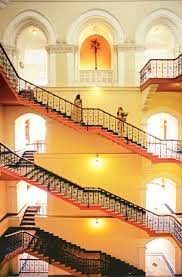
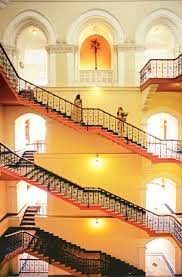
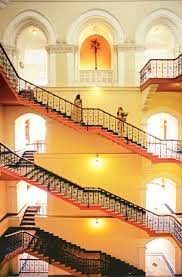
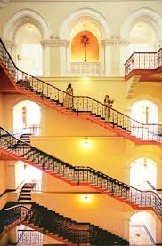

hotel

 


 the Taj Mahal Palace is an architectural jewel in Mumbai. The foundation of the Taj was laid in 1898, and the hotel opened its gates to the guests for the first time on December 16, 1902, even before the foundation for the Gateway of India was laid (on March 31, 1911). It is located in Colaba, beside the Gateway of India, and used to be the first sight for ships calling at the Bombay port before the construction of the Gateway. Taj Mahal Palace was the first building in Bombay to be lit by electricity.
At one time, it was believed that Jamshedji Tata was inspired to build this hotel after he was refused entry at Watsons Hotel, which was restricted to whites only. However, this story has often been challenged by various commentators who claim that Jamshedji had built this grand hotel to gift the people a royal experience worthy of Bombay.
The Indian architects originally on the project for the Taj were Sitaram Khanderao Vaidya and D. N. Mirza; however, it was completed by an English engineer, W. A. Chambers. Khansaheb Sorabji Ruttonji Contractor was the builder of this grand hotel, and the unique floating staircase of the Taj was his design. Construction of the Taj cost over Rs. 4 crores. The hotel is a six-story building with a central Moorish dome and magnificent architecture of the Indo-Saracenic style. This royal palatial building is carved with Victorian Gothic and Romanesque details along with Edwardian touches on the roof. The hotel boasts of many firsts in the Indian hospitality industry it used American fans, German elevators, Turkish baths and English butlers to give the people of its city an experience like no other hotel in the country.